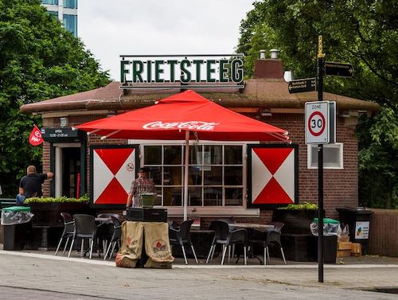

Eten en drinken in Amsterdam
Top tien plekken
- Café Restaurant Amsterdam

Café restaurant is een super gezellige plek waar ik vele goede herinneringen aan heb. Dit is de plek waar ik elk jaar kom om met mijn familie, vooral rond de kerst en andere speciale gelegenheden. Als je hier langs gaat raad ik de halve krab aan!
- Franse bakker
Lekker vers brood en taartjes voor verjaardagen. Het olijvenbrood en de citroen meringue taart zijn erg lekker.
- De Ysbreeker
Gevestigd om de hoek van TTH HvA is De Ysbreeker. Door het ontstaan in 1702 kent de Ysbreeker een rijke geschiendenis. Liggend aan de Amstel met een heel mooi gebouw is het de perfecte plek voor een koffie of borrel.
- Groene vlinder
In De Pijp midden in de Albert Cuijpstraat ligt de groene vlinder. De perfecte plek om te lunchen of een drankje te doen met vrienden.
- Rijks

Een restaurant waar je niet elke dag heen gaat. Gelegen in de Philipsvleugel in het Rijksmuseum. De gerechten worden heel prettig gepresenteerd, zo mooi dat je het bijna niet zou wilen eten.
- Fest
Wie van de HvA is er niet bekend met Fest. Hét stamcafé van de echte hva'er. Met de dagelijkse deals een perfecte plek om met medestudenten een drankje te doen.
- Sushito
Sushito wordt voornamelijk gebruikt via Ubereats. Perfect voor een drukke dag of als je geen zin hebt om te koken. En nog redelijk gezond ook!
- Dante
Dante is een plek waar ik al jaren kom. Geloceerd aan het begin van de spuistraat, maar toch best rustig. De frietjes zijn niet verkeerd met een drankje erbij.
- Frietsteeg

Aan de stadionkade heb je twee friettenten, een van deze is de frietsteeg. Door het Parool uitgeroepen als een van de lekkerste frietjes van Amstedam. En als je langs gaat neem dan zeker ook een kaaskroket van Holtkamp.
- Coffee company, De Bol

De Coffee Company De Bol (Ferdinantbol Straat) staat in mijn lijste. Dit is niet persé alleen voor de koffie, maar ook voor hun studieruimte. Deze is op de tweede verdieping waar je kan zitten met een goede latté achter je laptop.